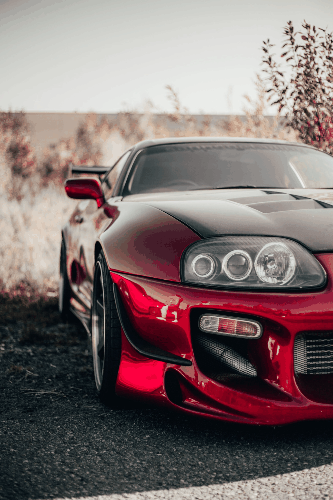
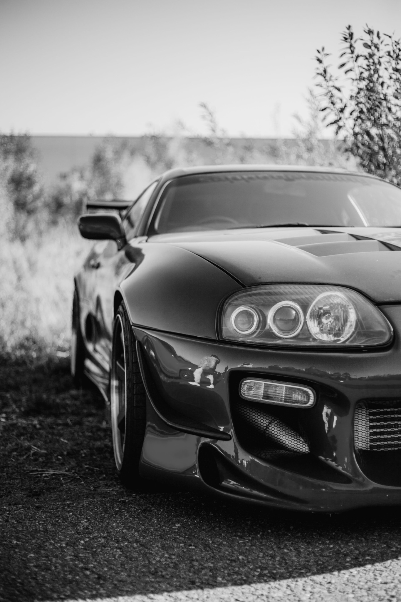
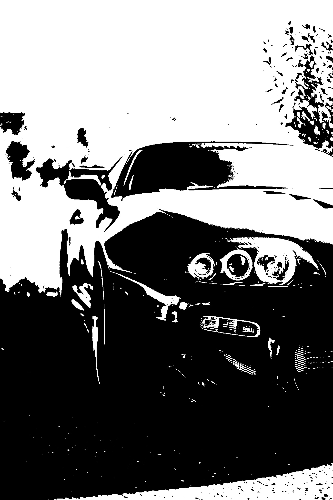
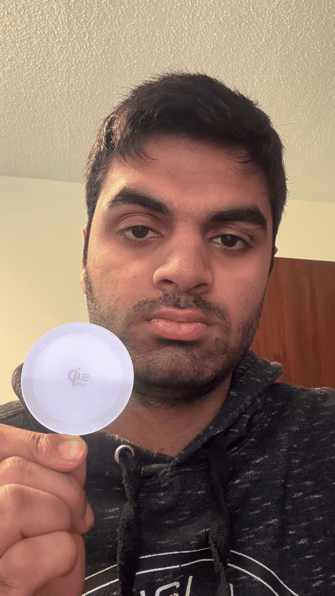
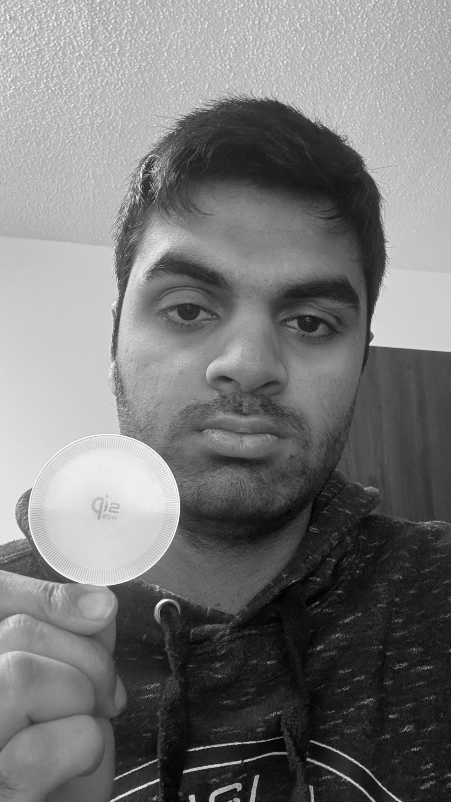
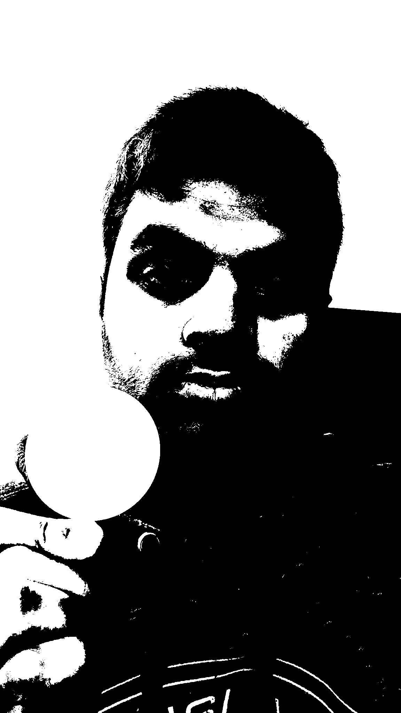

This page explores how digital images behave on the web. By comparing image formats,
file sizes, resizing methods, and incorrect proportions, I can see how editing an image
affects its appearance and storage requirements. The first section uses a red Toyota
Supra MK4 photograph from Pexels, and the second uses a photograph I took of a round
wireless charger next to my face.
Red Toyota Supra MK4: Image Formats, Resizing, and Proportions
I chose this red Toyota Supra MK4 photograph because its glossy bodywork, distinctive
headlights, reflections, and background provide plenty of fine detail to compare.
The supplied filename identifies the Pexels source as photo 9819403 and the contributor
as Alex the Photographer. The Pexels profile identifies the photographer as Alexandr
Ivanov and links to a gallery of other photographs. The uploaded JPEG is portrait-oriented
and measures 1365 x 2048 pixels. Its file size is 515,317 bytes (0.4914 MiB), which is
smaller than the approximately 5000 x 3000-pixel image suggested in the assignment.
Original Image and Format Conversions
The original photograph is a JPEG file. Photographer credit:
Alexandr Ivanov on Pexels.
The original measures 1365 x 2048 pixels and uses 515,317 bytes (0.4914 MiB).
The GIF, grayscale, and black-and-white versions let me compare how changing
formats and color representation affects image detail and file size.
Original color photograph. 1365 x 2048 pixels, 515,317 bytes (0.4914 MiB).
Photo credit: Alexandr Ivanov on Pexels. Click the image to open the original JPEG in a new tab.

GIF: 1365 x 2048 pixels, 1,290,730 bytes (1.2309 MiB).

Grayscale JPEG: 1365 x 2048 pixels, 455,574 bytes (0.4345 MiB).

Black-and-white JPEG: 1365 x 2048 pixels, 305,020 bytes (0.2909 MiB).
Downsizing Images with CSS
This example displays the original image at 20% of its original width. The height
is set to auto, so the browser preserves the original proportions. CSS changes
only the displayed size; the original file remains 1365 x 2048 pixels and
515,317 bytes (0.4914 MiB).
Original image displayed at 20% of its native width with CSS. Its proportions are preserved.
Proper Reduction of Image with an Editor
This copy was resized in an image editor to 600 pixels wide while preserving the
original aspect ratio. Its dimensions are 600 x 900 pixels and its file size is
124,780 bytes (0.1190 MiB). This creates a new, smaller image file, unlike CSS
downsizing, which only changes the displayed size.
These four copies were made from the correctly resized image. In the first two,
the width stays fixed while the height is reduced by about 33%, then reduced again.
In the last two, the height stays fixed while the width is reduced by about 33%,
then reduced again. These intentional distortions show why an image's original
proportions should be preserved.
Height reduced once 600 x 603 pixels, 89,771 bytes (0.0856 MiB). Width remains fixed.Height reduced twice 600 x 404 pixels, 63,449 bytes (0.0605 MiB). Width remains fixed.Width reduced once 402 x 900 pixels, 91,256 bytes (0.0870 MiB). Height remains fixed.
The first image uses the properly resized 600 x 900-pixel file. The second uses
a copy reduced to 25% of those dimensions. Both are displayed using the same CSS
sizing rules. The smaller source contains fewer pixels, so enlarging it produces
a softer image with less visible detail. The 25% file measures 150 x 225 pixels
and uses 10,347 bytes (0.0099 MiB).
Higher-resolution source 600 x 900 pixels, 124,780 bytes (0.1190 MiB).25% source enlarged 150 x 225 pixels, 10,347 bytes (0.0099 MiB). Enlarging this smaller source reduces visible detail.
Wireless Charger Next to My Face: Image Formats, Resizing, and Proportions
I took this photograph of myself holding a round wireless charger beside my face.
The circular charger gives the picture a clear geometric shape that can be compared
with the less uniform proportions of a face and hand. The original personal photograph
is a JPEG file measuring 1152 x 2048 pixels and 531,700 bytes (0.5071 MiB).
Original Image and Format Conversions
The original photograph is a JPEG file that I took myself. The GIF, grayscale,
and black-and-white versions let me compare how changing formats and color
representation affects the appearance and file size.
Original personal photograph: 1152 x 2048 pixels, 531,700 bytes (0.5071 MiB).
Click the image to open the original JPEG in a new tab.

GIF: 1152 x 2048 pixels, 1,367,124 bytes (1.3038 MiB).

Grayscale JPEG: 1152 x 2048 pixels, 509,132 bytes (0.4855 MiB).

Black-and-white JPEG: 1152 x 2048 pixels, 207,482 bytes (0.1979 MiB).
Downsizing Images with CSS
This example displays the original image at 20% of its original width. The height
is set to auto, so the browser keeps the original proportions. CSS changes only
the displayed size; the original file remains 1152 x 2048 pixels and 531,700 bytes
(0.5071 MiB).
Original image displayed at 20% of its native width with CSS; proportions are preserved.
Proper Reduction of Image with an Editor
This copy was resized in an image editor to 600 pixels wide while preserving
the original aspect ratio. Its dimensions are 600 x 1067 pixels and its file
size is 149,992 bytes (0.1430 MiB). This creates a new, smaller image file,
unlike CSS downsizing, which only changes its displayed size.
These four copies were made from the correctly resized image. In the first two,
the width stays fixed while the height is reduced by about 33%, then reduced again.
In the last two, the height stays fixed while the width is reduced by about 33%,
then reduced again. These intentional distortions demonstrate why image proportions
should be preserved.
Height reduced once 600 x 715 pixels, 103,761 bytes (0.0990 MiB). Width remains fixed.Height reduced twice 600 x 479 pixels, 70,415 bytes (0.0672 MiB). Width remains fixed.Width reduced once 402 x 1067 pixels, 105,279 bytes (0.1004 MiB). Height remains fixed.Width reduced twice 269 x 1067 pixels, 71,338 bytes (0.0680 MiB). Height remains fixed.
Improper Enlarging with CSS
The first example uses the properly resized 600 x 1067-pixel file. The second
uses a copy reduced to 25% of those dimensions. Both use the same CSS sizing rules.
The smaller source has fewer pixels, so enlarging it produces a softer image with
less visible detail. The 25% file measures 150 x 267 pixels and uses 9,462 bytes
(0.0090 MiB).
Higher-resolution source 600 x 1067 pixels, 149,992 bytes (0.1430 MiB).25% source enlarged 150 x 267 pixels, 9,462 bytes (0.0090 MiB). Enlarging this smaller source reduces visible detail.